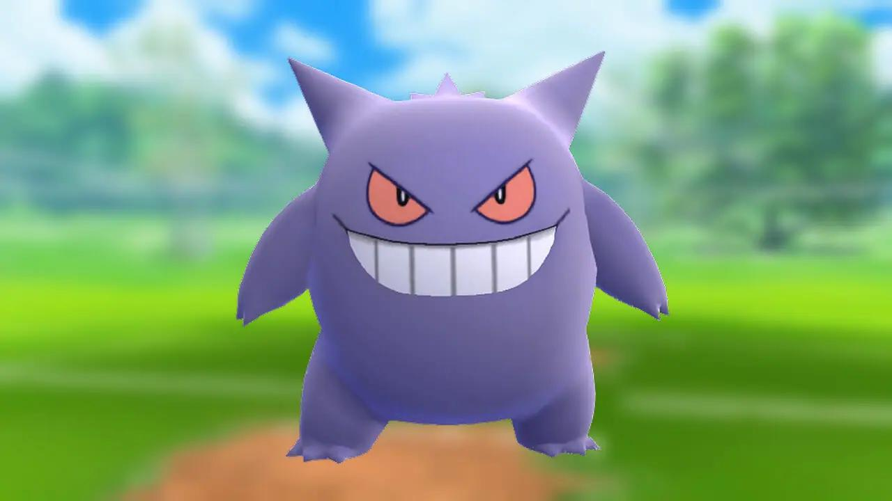

Projeto PokeAPI

Gengar é um Pokémon bípede roxo escuro com um corpo arredondado.
Tem olhos vermelhos, uma boca larga que geralmente se curva em um sorriso sinistro e orelhas pontudas.
Em suas costas há numerosos espinhos e espinhos menores no topo da cabeça, semelhantes a pêlos tufados. Seus braços e pernas são curtos, com três dedos nas mãos e nos pés.
Ele também tem uma cauda atarracada